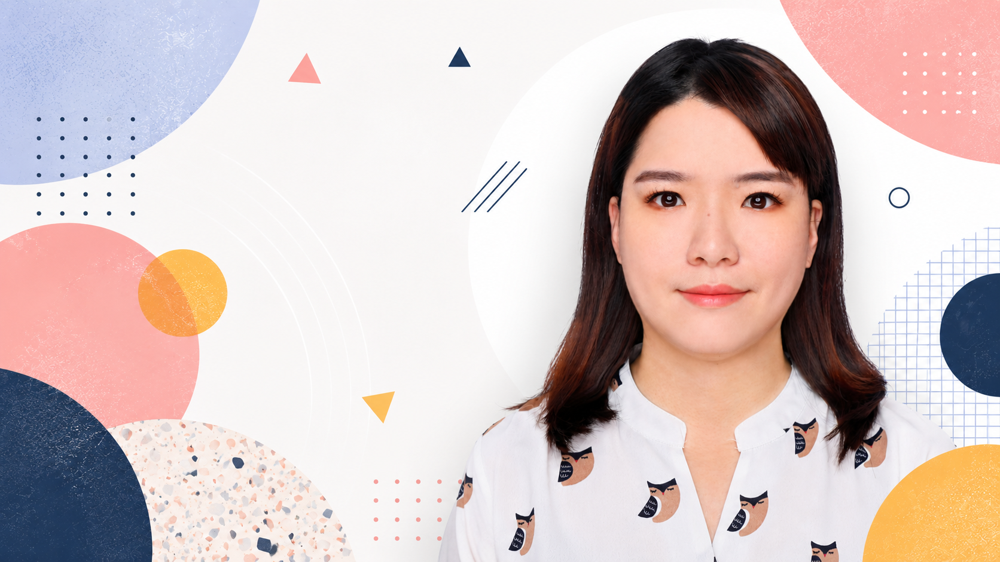
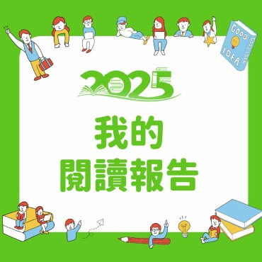
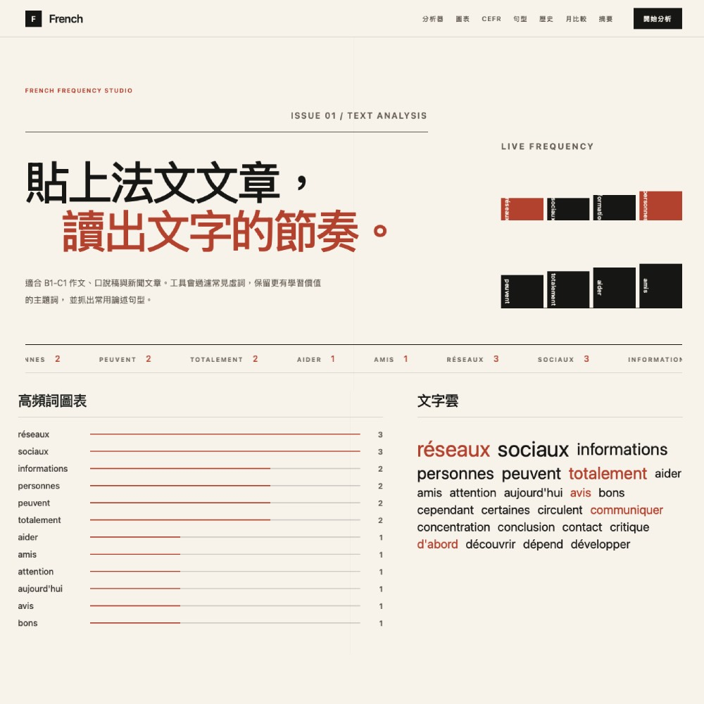
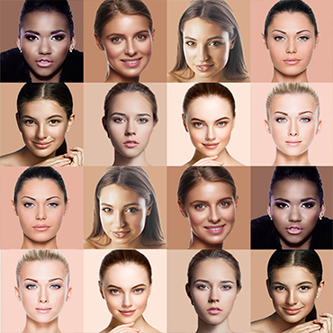
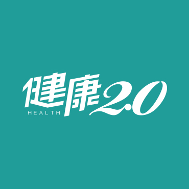
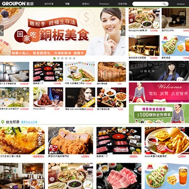
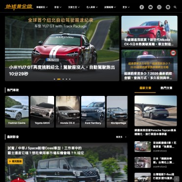
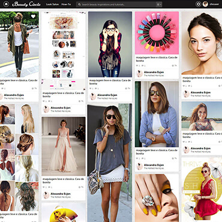

01
釐清問題
先把目標、使用者和限制問清楚，再決定畫面該怎麼長。

不只把畫面做漂亮，也會一起想內容架構、使用情境、RWD 細節和工程可行性。
先把目標、使用者和限制問清楚，再決定畫面該怎麼長。
整理資訊層級、流程和視覺節奏，讓使用者知道下一步要做什麼。
熟悉 HTML、CSS 和 RWD，設計時會一起顧到切版與維護成本。
善用研究、資料和 AI 工具加快整理，但最後的判斷仍回到產品脈絡。

跨部門協作產品流程，結合 data、AI 與前端落地思維，持續優化使用體驗。

從需求、內容、前端到 Analytics / SEO，獨立打造給真實使用者的小工具。

美妝科技服務頁、品牌頁與國際產品溝通，協助複雜技術更容易被理解。

健康內容平台改版，讓閱讀、導流和手機瀏覽更順。
從招募、訪談到洞察整理，協助團隊看見真正的問題。

團購網站與 App UI，讓商品瀏覽、分類與購買流程更清楚。
美食旅遊 App UI，整理探索、收藏與行程資訊。

汽車內容平台，處理新聞導流、專題活動與資訊架構。

品牌活動、社群網站與 HTML/CSS 頁面實作，累積不同風格的視覺表現。
我畢業於國立臺灣藝術大學視覺傳達設計研究所，做過電商、社群、美妝科技、 媒體平台和活動網站。不同產業有不同限制，但好設計通常都從「先講清楚」開始。
我擅長 UI/UX、HTML / CSS / RWD，也習慣和工程、內容、行銷一起工作。 對我來說，作品不是停在版面，而是能不能讓使用者少想一點、讓團隊好推進一點。
理解目標、使用者、證據與限制。
找出真正問題並建立優先順序。
探索流程、原型與介面解法。
與工程協作，檢查實作並持續優化。
釐清需求、使用情境、商業目標與限制。
透過 Research、Data、競品與不同方案探索問題。
建立 User Flow、Wireframe、Prototype 與 UI。
與 PM、Engineer 與 Stakeholder 一起確認可行性與取捨。
透過數據、回饋與實際使用結果持續調整。
確保設計能順利落地，並在實作過程中持續進行 Design QA 與體驗優化。